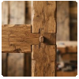
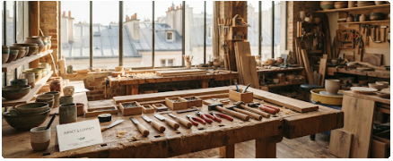

18450 kg
Rebuts nobles valorisés
Chutes d'ateliers, bois de charpente et rebuts industriels recyclés.
Mesurer notre impact tangible, certifier chaque gramme détourné des décharges et co-construire l'artisanat régénératif de demain.
Mise à jour certifiée
T1 2025 · Norme ADEME
18450 kg
Chutes d'ateliers, bois de charpente et rebuts industriels recyclés.
32,8 t CO₂e
Comparé à la production industrielle d'équivalents neufs non-circulaires.
142000 L
Procédés de décapage et teinture végétale à circuit fermé.
820 hrs
Apprentissage de la réparation, du surcyclage et insertion locale.
Chaque flux de déchet est répertorié par son origine d'extraction géolocalisée (dans un rayon moyen de 48 km autour des ateliers régionaux).
Zéro transport aérien, collage bio-sourcé sans solvant volatile.
Tous nos indicateurs sont audités semestriellement selon les règles de l'Analyse de Cycle de Vie (ACV) du berceau au réemploi.

Chaque création EcoArt est frappée d'un numéro de lot mentionnant son site d'extraction d'origine.
Venez toucher les matières, échanger avec les maîtres artisans ou déposer vos gisements réemployables.
Mobilité douce recommandéeMétro Ligne 9 (Charonne) à 200 m · Station Vélib' #11028 devant la cour pavée · Station de recharge pour vélos cargo disponible sur place.

En plus du tiers-lieu parisien, nos ateliers de forge, verrerie solaire et tissage se déploient en Nouvelle-Aquitaine, Auvergne-Rhône-Alpes et Bretagne.
Découvrir la carte complète des artisansNous comparons chaque pièce à son équivalent neuf industriel, selon la méthode ACV auditée chaque semestre.
Oui. Déposez-les à l'atelier central pendant les horaires de dépôt, nous évaluons leur potentiel de réemploi.
Oui, des ateliers d'une demi-journée ou d'une journée, sur site ou à la Manufacture. Écrivez-nous pour un devis.